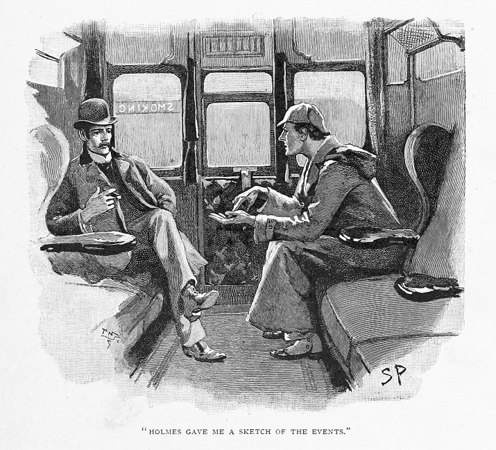
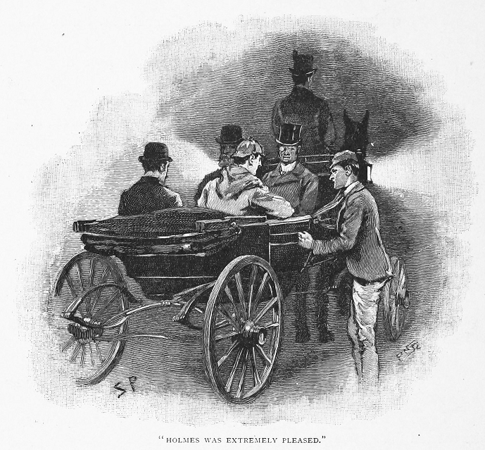

「どうやらワトソン、そろそろ僕が行かねば。」とホームズが言ったのは、座して朝食をともにしているある朝のことだった。
「行く！ どこへ？」
「ダートムア――キングス・パイランドへ。」
驚きはない。むしろこの尋常ならざる事件にまだ関わりないのがただ不思議なくらいだ。この件は現下、イングランド全土の噂の種だった。終日わが友は部屋のうちを低回しつつ項垂れては眉根を寄せて、一等きつい黒煙草をパイプに詰め替え詰め替えするばかりで、こちらから何か問いや話をかけても耳を貸さなかった。どの新聞も新しい版が出るごと一々、契約している売り子から届けられたが、それもさっと目を通すだけで部屋の隅へ投げ捨てる。とはいえ友が
「差し支えなければ私も同行したいのだが。」と私は言う。
「ワトソンくん、お出で願えるなら大変ありがたい。きっとまんざら無駄にもなるまいよ。なにせ極めて特異なものになりそうなふしがこの事件にはある。思うに今からならパディントン発の汽車にぎりぎり間に合う。仔細は道々話すとしよう。すまないが君のあの上等の双眼鏡を持参してくれたまえ。」
そうこうして一時間あまりののち、気づけば私はエクスタ行急行の一等車の一隅に腰掛けていた。かたわらシャーロック・ホームズはあのお気に入りの耳垂れつき旅行帽をかぶり、油断なく熱心な顔で、パディントンで入手した出たての新聞の束にせわしなく目を落としていた。列車がレディングを過ぎてずいぶんした頃、最後のひとつを座席の下に突っ込むと、葉巻入れをこちらに差し出した。
「至極順調。」と友は窓の外を眺めながら時計も見やる。「現在速度は時速五十三マイル半。」
「四分ノ一哩標は見えておらんが。」と私。
「見ていないとも。だがこの路線は電信柱が六十ヤードごとにあるから計算は簡単。どうも君は、今回のジョン・ストレーカ殺害事件とシルヴァブレイズ失踪の件については詮索済みかな。」
「テレグラフ紙とクロニクル紙の記事は一読を。」
「今回の件も、新たな証拠を求めるより、細部の検討精査に推理のわざを用いた方がよい類いのものだ。この惨劇はあまりにめずらしく巧妙で、多大の人々の
「火曜の晩？」と叫ぶ私。「もう木曜の朝だ。昨日のうちに行けたのでないかね？」
「僕にもへまがあってね、ワトソンくん――つまるところ遺憾ながら、僕のことを君の手記からしか知らぬ人が思う以上に、そういう事態がよくある。実のところ、イングランド一の名馬がそう長く行方知れずのわけがない、殊にダートムア北部のごとき人家まばらな地方にあっては、とね。昨日は今にも馬が発見、ストレーカ殺しも
「では当たりでもついたと？」
「少なくとも事件について事実の要点はつかんだ。今から順を追って話そう。そもそも他人に聞かせるくらい事件の整理になるものはない上、これからの出発点を知らせぬことには、君に助力をどうお願いしたものかわからぬ。」
背もたれに寄りかかった私が愛飲の葉巻を吹かすと、ホームズも身を乗り出して要点ごとに細長い人差し指で左の手のひらを叩きつつ、これからふたりして赴くことになった事件のあらましを聞かせてくれるのだった。

「シルヴァブレイズとは、」と語り出す友、「アイソノミー系の馬で、その名だたる血統に引けを取らぬ輝かしい戦歴がある。ただいま五歳、出走のたびに入賞をロス大佐へもたらすものだから彼も運のいい御仁だ。現に今度の災難の起こるまで、この馬はウェセックス杯の一番人気で、賭け率も三対一。競馬界きっての人気を保ちつつ、まだ一度も期待を裏切ったことがないがゆえに、その賭け率でも依然として莫大な金が積まれている。したがって来たる火曜にシルヴァブレイズの出走が阻まれるとなれば、利害関係が極めて大きくなる連中も多い。
この事情は、大佐の調教場があるキングス・パイランドでもむろん承知だ。ぬかりなくこの本命馬を警備していた。調教師のジョン・ストレーカという男は元騎手で、ロス大佐の馬主服を着て騎乗していたが、しまいには計量椅子の目方が重量越えとなってね。騎手として五年、調教師として七年、大佐に仕えているがずっと熱心かつ正直な雇い人で通っている。その下には三人の厩務員がいるのみで、調馬場としては小さく、馬も四頭ばかり。毎晩うち一名が厩舎内で宿直し、あと二名は裏二階で寝る。三名とも
当夜は普段通り馬の教練と水飲みを終えて、九時には厩舎を閉めている。三名の厩務員のうち二名が調教師宅の母屋まで歩いてその台所で夕食を摂り、残る一名ネッド・ハンタという青年だけが番をしていた。九時過ぎ、女中のイーディス・バクスタが一皿のマトンカレーを夕食として厩舎へ運んだ。添えの飲み物はない。厩舎には水の蛇口がある上に、仕事中は水以外の飲み物を口にしてはいけない決まりだった。女中は
イーディス・バクスタが厩舎まであと三〇ヤードのところに来ると、暗がりから不意に現れたひとりの男が呼び止めてくる。角灯の投げかける丸い光の枠内に足を踏み入れて目の前に出てきた男は、紳士風の人物で、ツイードの服に布帽子、ゲートル、握り玉のある太い杖という出で立ちだ。ところがその女の印象にとりわけ残ったのが、顔色がひどく青ざめて挙動も不審な点だった。女の見立てでは、年は三十をいささか過ぎたくらいか。
『すみませんがここはどこで？』と男が訊ねた。『もうこの荒野で野宿しようと思っていたら、お前さんの灯りが見えたんで。』
『キングス・パイランド調教場のすぐわきですよ。』と女。
『そうだったか！ こりゃしめたもんだ。』と大声を出す男。『毎晩ひとりずつ寝るんだと見えるな。それで今お前さんが
この男の様子がずいぶん前のめりなので女中も怖くなり、すり抜けるようにいつも食事を渡す手はずの厩舎の窓のところへ駆けていった。もう窓は開いていて、ハンタは内側の小さな卓についていた。そして次第を話していると、またその不審者がやってくる。
『こんばんは。』と男は窓をのぞき込む。『実はお前さんに話があるんですがね。』女中の証言では、そう声をかけたときに、握った手から小さな紙袋の端がちらり見えたという。
『何用で来なすった？』と宿直の厩務員が問い返す。
『お前さんの
『さてはてめえ、馬の予想屋だな？』と叫ぶ宿直。『よしッ、キングス・パイランドでは探る輩をどう扱うか見せてやろう。』そして跳び上がって厩舎を走り抜け、犬を放した。女中はそのまま母屋へと駆け戻るが、走りながら振り返ってみると、その不審者は窓から身を乗り入れるようにしていたという。ところが一分後にハンタが番犬を連れて飛び出た時分には、もうその姿がなく、厩舎のまわりを駆けずり回っても、どこにも影かたちが見つからずじまい。」
「いいかな。」と私は問いを差し挟む。「その厩務員、犬を連れて飛び出た際、厩舎を戸締まりせずに出たのかい？」
「見事だ、ワトソン、お見事！」と小声で返すわが友。「その点が大事だと僕にも強く思えたから、昨日のうちにダートムアへ速達の電報を打ってその如何を訊ねた。青年は出る際、鍵を掛けたそうだ。窓もついでに問い合わせたが、人間の通れるほどの大きさはないという。
ハンタはしばらく待って、同僚が食事から帰ってきたのち、親方の調教師に
翌朝七時に起床した細君は、夫がまだ戻っていないことに気づく。そこであわてて着替えて、女中を呼んで厩舎まで行ってみた。すると厩舎の戸は開け放し、内では椅子で縮こまったハンタが深い昏睡状態で、かの名馬の区画は
馬具置き場にある藁刈り用の裏二階に眠っていたふたりの厩務員が、すぐに呼び起こされた。両人とも熟睡していて夜中に何も聞かなかったという。ハンタは何か強い薬品のために昏睡しているのが明らかで、まったく気を取り戻す気配もないためそのまま寝かせておいて、厩務員二名と女性二名とで、行方知れずの人と馬とを探しに飛び出した。まだどこかしら、調教師が何かわけありで馬を朝の運動に連れ出したと思われていたのだが、母屋そばの小さな丘に上がってみると、そこから付近の荒地が見渡せるものの、いずこにも名馬の影すら見えないばかりか、ただならぬ事に出くわしたのではという何やら不吉な予感がする。
さて厩舎から四分の一マイルほどばかり、ハリエニシダのやぶにストレーカの合羽が引っかかっていた。そしてすぐその先、鉢状の凹地があり、その底に不幸な調教師の死体が見つかった。何か鈍器で一撃されて、頭蓋骨は粉砕、腿にも傷、こちらは長く鮮やかな切り傷で、鋭利な凶器によるのは明らか。とはいえストレーカ自身も襲撃者によほど激しく抵抗したと見え、右の手には柄元まで血まみれの小型ナイフを握り、左の手には赤と黒の絹製首巻きをつかんでいて、その首巻きは女中の証言によれば、前夜に厩舎へ来た不審者のつけていたものだとか。昏睡から覚めたハンタも、その首巻きの持ち主について同意見だった。あの男が窓際に立っているとき、マトンカレーに薬を盛られたに違いないとも力んだ。失踪した名馬に関しては、犯行現場となった凹地の底にある泥に無数の足跡があったため、揉み合いの最中にはそのあたりにいたものと見える。しかしその朝以来行方知れずで、莫大な賞金も懸けられ、ダートムアを流浪する民たちも目を配っているが、知らせはない。最後に宿直の青年が食べ残した夕食を分析してみると、中に阿片粉末が極めて多量に混入していることがわかったが、同夜同じものを食べた母屋の人々には少しの異常もなし。
以上があらゆる憶測を排しつつ可能な限りありのままに述べた事件の骨子だ。今度は警察によるこの事件の取り扱いを、要点のみ。
本件担当のグレゴリ警部は、極めて有能な人物だ。想像力さえあったなら、刑事として頭角を現せたというのに。現場へ出るなり警部はただちに、当然の嫌疑がかかれる男を見つけ出して逮捕した。先に言及した別荘のひとつに滞在中の男だから探し出すのはさほど困難もなかった。名をフィツロイ・シンプソンというそうだ。立派な出自と教育のある男だが、競馬で一財産すってしまい、今ではロンドンのあちこちにある遊興倶楽部で、うちうち上流相手の賭け事の胴元をやって暮らしている。手持ちの賭け帳を調べてみると、自分であの名馬の負けに五〇〇〇ポンドも賭けたと控えてあった。逮捕時に自分から白状したところでは、実はダートムアまで出張ってきたのは、キングス・パイランドの持ち馬や、第二人気のデズバラ、すなわちケープルトン厩舎サイラス・ブラウン管理の馬の情報を得たかったからとのことだ。先に触れた前夜の行動もことさら否定せず、悪い企みがあったわけでなくして、ただ直にネタをつかみたかったからだと言い張った。そこで首巻きを突きつけられると、さっと青ざめたが、それが被害者の手にあったわけもまるで釈明できない。服の濡れているのは、前夜の強い雨のなか屋外にいたことを物語る上、頭にこぶのある杖は南国産の棕櫚製、鉛入りで重みがあるから、繰り返し殴打すれば調教師の受けた深い傷も無理なくつけられる。かたやその男の身体には外傷がひとつもなく、ストレーカのナイフにああした血の付いている点に鑑みれば、複数の加害者のうち少なくともひとりにその痕がなければならぬ。これであらましがすべて頭に入ったと思うが、ワトソン、何か新たな側面を見つけてくれるのなら、どこまでも恩に着るよ。」
ホームズ一流の明晰な話しぶりを、私はこの上なく熱心に聞き入っていた。事実のおおよそは自分にも既知のことだったが、重要度の高いものがどれで、互いにどういうつながりがあるのかは十分には測りかねていたからだ。
「こういう可能性はないだろうか。」と自説を語ってみる、「ストレーカの切り傷は、頭を殴られたあと咄嗟にもがくうち、自分のナイフでつけたとか？」
「可能性どころか、大いにありうる。」とホームズ。「その場合、被疑者に有利な要点がひとつなくなる。」
「それにしても、」と私は言う、「警察の見立てが今になってもどうにもわからん。」
「あいにく僕らがいかなる推理を立ててもそいつに真っ向反することとなる。」とはわが友人の返答。「警察の想定ではどうやら、フィツロイ・シンプソンは
夕過ぎにようやくたどり着いた小さな町がそのタヴィストックで、さながら盾中央の突起よろしく広大なダートムアの中心にぽつり佇んでいた。駅で出迎えてくれたのが紳士ふたり。ひとりは背の高い金髪の男で、獅子のごとき頭髪と顎鬚を持ち、その見据えた碧眼からこちらに関心を抱いていることがわかる。もうひとりはきびきびした小柄の人物で、身なりは小ぎれいなフロックコートとゲートル、短く整えられた頬髭に加えて片眼鏡があった。この後者が馬主として著名なロス大佐で、前者はグレゴリ警部、英国探偵界隈で急速にその名を知られつつある人物である。
「あなたのご出張、まことに欣快の至りです、ホームズさん。」と言うのは大佐だ。「こちらの警部殿も考えうる限りの手を尽くしておいでですが、気の毒なストレーカの仇討ちのため、かつは馬を取り戻すため、あらゆる石を起こしてでもと思いました次第で。」
「その後、何か進捗は？」とホームズが訊ねる。
「残念ながらほとんど進展ありません。」と答えるのは警部だ。「表に無蓋馬車の用意がありますので、日の暮れないうちにきっと現場をご覧になりたいでしょうから、仔細は馬車の中で道々。」
一分ののちには一同、乗り心地のよい四輪のランドー馬車に座を占めて、趣あるデヴォンシアの古風な街並みを揺られて進んだ。今度の事件に夢中のグレゴリ警部は怒濤の勢いで話してゆき、たびたびホームズも質問や相づちを挟んだ。ロス大佐は腕組みしながら背を反って帽子を目深にかぶり、私といえばこの探偵ふたりの対話を興味深く拝聴していた。グレゴリは自分の見立ても述べていたが、それは来がけの汽車でホームズが予言したほとんどその通りだった。
「フィツロイ・シンプソンはもはや縛についたも同然です。」と刑事が述べる、「わたくし一個としても彼が犯人だと信じています。同時にまったく状況証拠ばかりですから、何か新事実があれば容易に覆る点は否めませんが。」
「ストレーカのナイフについては？」
「わたくしどもの結論では、倒れざまに自分でつけた傷だと。」
「わが友人で医者のワトソンくんからも、その説を来る途中で聞かされました。その場合、この男シンプソンには不利になってくる。」
「ええ間違いなく。シンプソンにはナイフも傷ひとつもありませんから。不利な証拠としては現状かなり有力かと考えられます。本命馬の失踪は彼に大きな利益があり。厩番の青年に薬を盛った疑惑があり、強い雨のなか屋外にいたことも確実、鈍器になる杖も所持、あげく死体の手には彼の首巻き。まったく裁判に出せるだけの証拠が揃っています。」
ホームズはかぶりを振った。「やり手の弁護士にかかればその程度みな論破されます。」と口に出す。「なにゆえ馬を厩舎の外へ連れ出さねばならぬのか。傷つける目的ならなにゆえその場でできなかったのか。所持品に厩舎の合い鍵は見つかっているのか。阿片粉末の売り主はどこの薬局か。とりわけ土地不案内なこの男が、馬をどこに隠せるというのか、何よりこの名馬を？ 女中に頼んで厩番の青年に届けさせようとした紙切れについては本人はいかな釈明を？」
「一〇ポンド紙幣だと。財布にも一〇ポンド紙幣が一枚見つかっています。しかし仰った異議はそう重いものとも思われませんね。この土地に不案内じゃあないのです。夏時分にも二度、タヴィストックに滞在経験あり。阿片はおそらくロンドンからの持ち込み。合い鍵は目的を達した以上、捨てたと考えていいでしょう。馬は荒れ地のどこか凹地か廃坑にいるものかと。」
「首巻きはどう釈明を？」
「自分のものには相違ないけれど、
ホームズはつと聞き耳を立てる。
「跡を発見しまして、それを見ると、流浪の民の一団が月曜の夜、殺人のあった場所から一マイルと離れないところで野営をしていたようなのです。火曜には立ち去っています。そこでシンプソンとこの連中のあいだに示し合わせがあったものとすると、馬をその連中のところまで連れて行く途中、ストレーカに追いつかれたのではないか、ならば馬は今連中の手にあるのではないかと？」
「確かに可能性はあります。」
「目下この流浪民をたずねて荒れ地を捜索中です。同時にタヴィストックを中心に一〇マイル圏内の厩舎と付属小屋をことごとく調べました。」
「すぐ付近にもうひとつ調教場があるそうで。」
「はい、そこも絶対に見逃せない要素のひとつです。そこのデズバラという馬が二番人気ですから。一番人気がいなくなることに利益があります。そこの調教師のサイラス・ブラウンという男は今回大金を賭けているらしく、死んだストレーカとは不仲だったとも。で、一応その厩舎も調べてはみましたが、この事件に関係のありそうなものは何ひとつ。」
「この男シンプソンとケイプルトン厩舎の利害関係は何も？」
「全然なしです。」
ホームズは馬車のなか後ろへ寄りかかり、話はそれきりとなる。数分後、御者が馬車を停めたのは、こぢんまりとした赤煉瓦の邸宅のところで、ちょうど道路に面した軒が長く突き出ていた。少し離れて
「失敬。」と友人は、呆気にとられて顔を見つめていたロス大佐に向き直る。「つい白昼夢を。」ところがその目にはひとつ輝きがあり、その態度から興奮を押し殺しているのがわかったから、その
「今すぐ凶行の現場へ出向かれますね、ホームズ先生？」とグレゴリ警部。
「むしろしばし立ち話で、仔細をうかがえれば。ストレーカの遺体はいったんここへ、ですね？」
「はい、まだ二階に。検屍が明日なので。」
「ストレーカは長らくこちらにお勤めで、ロス大佐？」
「日ごろからいい働きぶりでした。」
「
「ご覧になるようでしたら居間の方に全部まとめてありますが。」
「ぜひ拝見を。」我々一同が表の間へぞろぞろ入り、中央の卓を囲んで席に着くなか、警部は小さなブリキの角箱を開けて、ひとかたまりの色々な物品を面前に並べて見せた。蝋マッチが一箱、二インチほどの獣脂蝋燭が一本、ＡＤＰ印のプライヤ製パイプ、長刻みの板煙草を半オンスばかり詰めた
「これは特殊なナイフ。」とホームズはナイフを取り上げ、つぶさに
「医者で言う眼科用のメスだな。」と私。
「いかにも。精密仕事のために作られた細小の刃。荒仕事に出る男の持ち物にしては妙だ、殊に
「刃の先にコルクを当てるものでして。死体そばで発見されています。」と警部。「細君の話では、このナイフは前から化粧台に置いてあったのを、出がけにストレーカがつかんでいったんだとか。得物としては貧弱ですが、そのとき手近にあったものでは、これが一等マシだったんでしょう。」
「ありえる話ではある。この書付けは？」
「うち三枚は乾し草代の領収書です。ひとつはロス大佐からの指示の手紙で、残りの一枚がボンド街のマダム・ルシュリエという帽飾店から、ウィリアム・ダービシャ宛に出た計三七ポンド十五の勘定書です。ストレーカの細君いわく、ダービシャとは夫の友人で、ここ宛でちょいちょい手紙が届いたということです。」
「マダム・ダービシャはなかなかの贅沢好きらしい。」とホームズは勘定書に目を落としながら述べる。「衣服一着に二十二ギニーもかけるとは。しかしここでわかることはもうないようですから、今度は凶行の現場を見に行くとしましょう。」
居間から揃って出て行くと、廊下に待ち構えていたひとりの婦人がつかつかと進んできて、グレゴリ警部の袖に手を掛けた。憔悴と焦慮の見える顔にはまだ先頃の恐怖が残っていることがわかる。
「捕まえましたか？ 見つかりましたか？」と女は息も絶え絶えだ。
「まだですよ奥さん。しかし、このホームズ先生がロンドンから加勢に来てくださいましたから、一同精一杯やりますとも。」
「あなたにはいつぞやプリマスの園遊会でお目に掛かりましたね、ストレーカさん。」とホームズ。
「さあ、何かのお間違いでは。」
「おや？ いや確かにそのはず。あのとき山鳩色の絹の召し物に駝鳥の羽根飾りをつけてお越しでしたよ。」
「いいえ、そんな服は一枚も。」とご婦人は答える。
「ああ、そういうことでしたか。」と言うホームズ。そして失礼を詫びて、警部を追って外へ出た。荒野を抜けて少しばかり行くと、死体のあったという凹地へ出た。へこみの縁にはハリエニシダのやぶがあり、そこへストレーカの合羽がかかっていたらしい。
「当夜は無風だったそうで。」とホームズ。
「ええ、ただ雨は土砂降りで。」
「すると合羽は風でやぶまで吹き上げられたというより、そこへ置いたということに。」
「ええ、やぶに載せておいたものです。」
「たいへん気になります。地面はひどく踏みにじられていると見えます。さだめし月曜夜以来おおぜいが歩き回った？」
「わきのここへ敷物を引いて、みんなその上におりましたよ。」
「素晴らしい。」
「この鞄にストレーカの履いていた靴を片方と、フィツロイ・シンプソンのをひとつと、それからシルヴァブレイズの蹄鉄を一個持って来ました。」
「警部殿、見事なお手際です！」鞄を受け取ったホームズは凹地の底へ下りていき、敷物を中央へ押し出してから上に腹ばいになり、両手に顎を載せて目の前の踏みにじられた泥を注意深く調べた。「むむ！」突如として友人の声。「これは一体？」
なんと燃えさしの蝋マッチで、泥まみれだからちょっと見ではただの小枝にも見える。
「どうしてそんなものを見落としましたかな。」と警部は苦い顔をした。
「泥にうずもれていてはさすがに見えません。見つかったのはただ最初から探すつもりだったからです。」
「えッ！ 初めからあると思ってお探しに？」
「なくはないとね。」
友人は鞄から靴を出して、それを泥についた跡にひとつひとつ合わせてみた。それから凹地のふちへ上がってきて、シダややぶのあいだを這い回った。
「あいにくもう何の跡もございません。」と警部。「一〇〇ヤード四方の地面は自分で念入りに調べてみたんですからな。」
「なるほど！」とホームズは起き上がる。「そうまで仰るなら差し出がましい再調査はよしましょう。その代わり日が暮れるまでこの荒野を少し散歩でも。さすれば明日の下ならしにもなります。それからこの蹄鉄は幸運のまじないに、懐に入れるとしましょう。」
ロス大佐は先刻よりわが友人の黙々と順々に進めていく仕事ぶりにじれてしまったらしく、時計を一瞥する。「できれば一緒にお帰りを願いたいですな、警部さん。」と口に出す。「ご助言たまわりたいことが色々ありますから。殊にうちの馬を出走簿から消してもらわねば、皆さんに申し訳が立たんのではと。」
「絶対になりません。」とはっきり言い切るホームズ。「必ず名簿はそのままに。」
大佐は一礼する。「そのお言葉を承るのはたいへん欣快です。」と応じる。「私どもは故人ストレーカの宅におりますから、散歩がお済みのあとはそちらに。ご一緒にタヴィストックへ馬車で帰りましょう。」
大佐とグレゴリ警部は背を向けるが、ホームズと私とは荒野をゆっくり歩いていく。陽はケイプルトン調教場の彼方に暮れなずみ、眼前のなだらかな平原は黄金色に染まり、枯れシダや茨も夕陽が当たって深い薔薇色へと深まってゆく。ところがその輝かしい景色もわが友人には無用の長物。なぜなら深々と思索に耽っているからだ。
「このたびは、ワトソン、」とようやく口を開く。「ジョン・ストレーカ殺しの犯人という問題はひとたび措いて、馬の行方捜しに専念しよう。さて凶事の最中または事後に馬が逃げ出したものとすると、行く先は一体どこか？ 馬とは群れを好む生物。自由に放り出したなら本能としてキングス・パイランドへ帰るかケイプルトンに行くかするはず。この荒野を走り回るいわれなど！ ならばこれまでに目撃されてしかるべきだ。流浪の民が馬をさらうわけもない。むしろ厄介事を聞きつけたならいつもその場を引き払う。警察に煩わされるのを厭うのでね。名馬となれば売りようもない。馬をさらっても大いな危険があるばかりで、何らの益もない。まずここは明白。」
「ならどこかね？」
「今言った通り、行き先はキングス・パイランドかケイプルトンに相違ない。キングス・パイランドには不在。となればケイプルトン。これを作業仮説として、そこから導かれることをひとつ思案しよう。荒野でもこのあたりは警部も言うように土壌が極めて固く乾燥している。しかしケイプルトン方面へゆるやかな下りになっているから、見たまえ、向こうに細長い凹地があるが、あの付近は月曜の晩には実にぬかるんでいたはずだ。今の想像通りとすれば、馬はあそこを通ったはずである以上、あの地点でこそ足跡が見つからねばならぬ。」
こう話しながらも我々はすたすたそちらへ歩いていたから、ものの数分で問題の凹地までたどり着いた。ホームズが頼むので私はその凹地のふちを右からたどり、当人は左から行ったが、五〇歩と進まぬうちに友人が急に声を上げたので見てみると、手招きしている。友人の目前の軟らかい土に馬のひづめの跡がいくつもはっきりついており、そこで懐から取り出された蹄鉄があてがわれると、ぴったりと符合した。
「ほら想像力の有難味だ。」とホームズ。「グレゴリには唯一この素質が欠けている。こちらは想像力を働かせて事件の可能性を探り、その仮定に基づいて進めた結果、その正しさを確かめた。さて行こう。」
我々はぬかるんだ凹地を越えて、乾いた固い草土を四分の一マイルほど歩いて行った。やがてまた土地は傾斜して、そこにもひづめの跡があった。再び半マイルばかり何もないが、ケイプルトンのほど近くでまたまた見つかる。第一発見者のホームズは、立ち止まって得意げな顔で指さしてみせる。男の靴跡が、ひづめの跡に並んで認められたのだ。
「これまでは馬ばかりだったのに！」と口走る私。
「その通り。今までは馬のみ。むむ、これは！」
人と馬との足跡はそこで急転回、キングス・パイランドの方へ向いていたのである。ホームズは口笛を吹いて、そのままその足跡を追いだした。その視線は足跡のみに向けられていたので、私がふとわきに目をやってみると、なんと反対方向に引き返す足跡が同じくあるのがわかった。
「君にも一点だ、ワトソン。」とホームズは私が指摘すると言う。「おかげでわざわざ行った先から折り返して無駄足を踏まずに済む。さあこの帰り道の方をたどろう。」
そこから先は早かった。足跡はケイプルトン厩舎の出入口に通ずるアスファルト敷きのところで途絶えていた。近づくと、厩舎から厩務員がひとり飛び出してくる。
「ここは散歩で来るところじゃねえ。」と厩務員。
「ひとつうかがいたいだけです。」と言うホームズを見ると、懐に何かをつまむ指が入っている。「ご主人のサイラス・ブラウンさんに会うには、明朝五時の来訪ではやや早すぎるかね？」
「そりゃご苦労。そのくらいなら、まあ。旦那はいつでも朝一だ。おや当の旦那だぜ。お前さん直に聞くがいいよ。とんでもねえ、金もらうところなんて見つかりゃ、たちまちお払い箱だ。なんなら後でな。」
シャーロック・ホームズがいったん取り出した半クラウン銀貨を懐に戻すと、そこへ恐ろしい形相をした年配の男が、狩猟鞭を振り振り大股で門から出てきた。
「どうした、ドウソン！」と大声の男。「無駄話するな！ とっとと仕事を片付けろ！ で、お前らは一体何用でここへ来た？」
「一〇分ほどお話しをと、ご主人？」とホームズの声音はどこまでもさわやかだ。
「ごろつきの相手になってる暇はねえな。よそ者に用はねえ。帰った帰った、犬をけしかけるぞ。」
身を乗り出したホームズが調教師の耳へ何か囁きかける。と、ブラウンはぎくりとして生え際まで顔を真っ赤にさせた。
「嘘だッ！」と男は叫ぶ。「言いがかりだッ！」
「結構。ならば今ここで事を荒立てるか、それとも中の客間で話し合うか？」
「じゃ、じゃあ中へ入ってもらおうか。」
ホームズは微笑する。「待つのは数分もかかるまいよ、ワトソン。」とのお言葉。「ではブラウンさん、お招きに応じましょう。」
実際は二〇分で、夕映えの赤がみな灰色の宵へと褪せる頃、ホームズと調教師が連れ立って出てきた。わずかのあいだにサイラス・ブラウンの変わりようといったらなかった。顔色は土気色、額には玉の汗が光り、手も震えて狩猟鞭も嵐に揺れる小枝のようだ。横暴尊大な先ほどの態度もどこへやら、さながら主人に仕える犬のごとく、わが友人のそばでかしこまっている。
「お指図の通りに致します。必ず致しますんで。」と男。
「手抜かりのないように。」とホームズは振り向いて見据えた。その眼力に男は気圧されている。
「はい、決して手抜かりは。必ず出します。あの、初めから変えておきましょうか。それとも――」
ホームズは少し考えていたが、笑みをこぼす。「いや、そのままで。」と告げる。「その件は後ほど手紙を。もう
「どうぞ信じて、信じてくださいよ！」
「当日はあくまで自分のもののように取り扱うことだ。」
「任せてください。」
「うむ、そう願いたい。さて明日こちらから連絡する。」とホームズはくるり
「あれほど御山の大将と臆病者とコソ泥とを完璧に兼ね揃えた御仁、サイラス・ブラウン殿以外そうはお目にかかれまい。」とホームズは長歩きのさなかに言う。
「では馬はやつのところに？」
「あの御仁、凄みを利かせようとしたが、あの朝の行動を正確に話して聞かせると、僕が見ていたとでも思い込んだらしく。むろん君も承知の通り、妙につま先が尖った足跡、あれはブラウンの靴の形が一致した。その上、雇い人たちにはこれほどのことは仕出かせない。解説はこうだ。日課通り朝一で馬場に出ると、荒野によその馬がうろついているのに気づいた。場外へ出て行ってみたところ、かの本命馬の名の由来となった額の銀色の
「しかし、あの厩舎も捜査済みだったのでは？」
「あいつほど馬に手慣れたやつなら、いくらでも誤魔化しようはある。」
「でも、あいつに馬を預けておいて心配はないのかい？ あの馬に傷を付ければ、向こうの得にしかならんのでは？」
「おお親愛なる君よ、やつは〈眼の珠のごとく〉大切にするとも。罪を軽くするには馬の無事が欠かせないとしっかり心得ている。」
「ロス大佐のあの様子ではどうあってもお目こぼしもありそうにないが。」
「この件は大佐の一存というわけではない。僕は自分の流儀を貫き、明かす度合いの大小も自在。そこは官憲ならぬ身の利点だ。君はどう思ったか知らないがワトソン、大佐の態度は僕には少々横柄だった。その代償としてここで、ささやかながら面白い趣向をこらしたくなってね。馬のことはくれぐれも内密に。」
「いいとも、君の許しがあるまでは。」
「もっともこれはジョン・ストレーカ殺害犯の問題に比べれば、ごく些細なことだ。」
「ではこれからその方に専念を？」
「その反対、夜行列車でともにロンドンへ帰ろう。」
わが友人のこの言葉に衝撃を受けた。デヴォンシアに来てまだ数時間にしかならないのに、これほど素晴らしい滑り出しを見せた調査に見切りを付けるなんて、さっぱり意味不明だった。これ以上の言葉を引き出せないまま、とうとう調教師宅に帰り着いた。大佐と警部が揃って客間で待ち受けた。
「友人と僕は夜行特急でロンドンへ引き上げます。」とホームズ。「おかげで美しいダートムアの空気を少々堪能できました。」
警部は目を剥き、大佐は冷ややかに唇を尖らせる。
「ではストレーカ殺しの犯人逮捕は断念されましたな。」と大佐。
ホームズは肩をすくめる。「確かに眼前にゆゆしき難点はあります。」と答える。「とはいえ、あなたの馬がこの火曜、出走できる見込みは万全ですから、どうか騎手のご用意を。ストレーカの写真を一枚拝借願えますか。」
警部は封筒から一枚取り出して、ホームズに渡した。
「ああグレゴリさん、欲しいものはいつも前もってご準備されている。ところで、しばらくお待ちを願えれば。女中に質問したいことがありますので。」
「正直、ロンドンからわざわざ探偵を呼んで馬鹿を見た。」と大佐が露骨な物言いをしたのは、ホームズが部屋を出てすぐのことだった。「あの男が来てから何の進捗があった！」
「少なくともお持ちの馬が出走できる保証を得ましたな。」と私。
「なるほど保証はある。」と大佐は肩をすくめる。「それより馬を早く戻してもらいたい。」
私が友人の弁明をしようとしたところへ、当人が部屋に戻ってきた。
「それでは皆さん、」と友人、「晴れてタヴィストックへ参れます。」
我々が馬車に乗り込む際、厩務員のひとりが戸を押さえてくれた。ふと何か思い立ったホームズが身を乗り出してその青年の袖を引く。
「
「自分が。」
「近頃何か羊に変わったことは？」
「へえ別に大したことは。ただ三頭だけ足がダメになっちまいまして。」

ホームズがたいへん満足げなことは、私なればこそわかった。例のごとく、ほくそ笑んで両手をこすり合わせたからだ。
「大穴だ、ワトソン、実に大穴が来た。」とホームズは私の腕をつねる。「警部、羊に妙な病気が流行している点は、大いにご注意なさるとよいでしょう。出発だ、御者！」
ロス大佐は依然としてホームズの能力を不審がっている面持ちだが、警部は見たところいたく注意を喚起させられた様子だった。
「それが重要だとお考えに？」と警部。
「極めて。」
「そのほか何かこちらで留意すべき点はありますか。」
「あの晩の犬の妙な行動です。」
「犬は一晩中、何もせずでしたよ。」
「だからこそ妙な行動なのです。」とシャーロック・ホームズは告げるのだった。
四日後、ホームズと私は再度ウィンチェスタ行の汽車に乗り、ウェセックス杯の
「うちの馬は一向見かけませんがね。」と大佐。
「ご覧になればご自分の馬とおわかりになりますね？」と訊ねるホームズ。
大佐はご立腹だ。「二〇年来競馬場に出入りしているが、ただいまのような愚問は初めてです。」とのたまう。「あの馬の額にある白銀の星と、
「賭けはいかがです。」
「ふん、それが妙なところです。昨日なら十五対一でもゆけたのに、みるみる差が縮まって、今では三対一でもどうですかな。」
「ふむ！」とホームズ。「何か気取られたか。なるほど。」
馬車が正面観覧席近くの特別区域に停まると同時に、出走表へ目をやると次の一覧が見えた。
ウェセックス賞杯
出場預け金一頭五〇ソヴリン（欠場時半額没収）、一着副賞一〇〇〇ソヴリン、四歳・五歳馬限定。二着三〇〇ポンド、三着二〇〇ポンド。新馬場（一マイル五ハロン）。
一、ヒース・ニュートン氏 ザニーグロウ（赤帽、勝負服・橙）
二、ウォードロウ大佐 ピュージリスト（桃帽、勝負服・青黒）
三、バックウォータ卿 デズバラ（黄帽、勝負服・黄袖）
四、ロス大佐 シルヴァブレイズ（黒帽、勝負服・赤）
五、バルモーラル公 アイリス（勝負服・黄黒縞）
六、シングルフォド卿 ラスパー（紫帽、勝負服・黒袖）
出場預け金一頭五〇ソヴリン（欠場時半額没収）、一着副賞一〇〇〇ソヴリン、四歳・五歳馬限定。二着三〇〇ポンド、三着二〇〇ポンド。新馬場（一マイル五ハロン）。
一、ヒース・ニュートン氏 ザニーグロウ（赤帽、勝負服・橙）
二、ウォードロウ大佐 ピュージリスト（桃帽、勝負服・青黒）
三、バックウォータ卿 デズバラ（黄帽、勝負服・黄袖）
四、ロス大佐 シルヴァブレイズ（黒帽、勝負服・赤）
五、バルモーラル公 アイリス（勝負服・黄黒縞）
六、シングルフォド卿 ラスパー（紫帽、勝負服・黒袖）
「うちではもう一頭の方を出走取消にして、あらゆる希望をあなたの言葉につないでいるんです。」と大佐。「えッ何だと！ シルヴァブレイズ一番人気？」
「五対四でシルヴァブレイズ！」と馬券売り場が盛り上がる。「五対四でシルヴァブレイズ！ 十五対五でデズバラ！ 他の馬まとめて五対四！」
「全馬周回だ。」と声を出す私。「六頭揃っておる！」
「六頭全馬？ してみるとうちの馬も出走か！」と大佐は興奮の叫びを上げる。「だがあの馬は見えん。うちのあの色は通っていない。」
「通ったのはまだ五頭。きっと次ですな。」
私はこう言うと、たくましい
「あれがうちの馬だと。」と馬主は大声を上げる。「あの馬には額に白銀の毛がない。あんた一体何をやったんですッ、ホームズさん！」
「まあまあ、あの馬の走りぶりを見ていましょう。」と動じないわが友人。数分のあいだ私の双眼鏡で一心に眺める。「お見事！ 素晴らしい出だしだ！」といきなり声を上げた。「来た！ コーナーを回ってきたぞ！」
馬車から見える直線を進む馬たちは壮観であった。六頭の馬は一枚の絨毯で隠せるくらい僅差だったが、半ば頃まではケイプルトンの黄色が先頭を切っていた。ところが我々の前へ来るまでにデズバラの
「とにかく勝つには勝った。」と息をついた大佐が片手で両の目をぬぐう。「正直なところ何が何だか。もういい加減に秘密はなしでどうですか、ホームズさん。」
「承りました、大佐。みな申し上げましょう。さあ向こうで一緒に馬を確認です。こちらへ。」一同で、馬主とその連れしか入れない検量所へ入っていきながら、友人は話を続ける。「この馬の顔と脚とを酒精剤で洗うだけで結構、これこの通り元のままのシルヴァブレイズが現れます。」
「これはやられましたな！」
「あるイカサマ師の手に落ちていたのを見つけ出し、勝手ながら連れ戻したままの姿で出場させた次第です。」
「いやはや先生、天才のお手並みです。馬もたいへん調子がいいようで。生まれてから一番の調子です。あなたの手腕を疑るなんて、千回は詫びねばなりません。大切な馬を取り戻して下すってまさしく大恩人です。この上はジョン・ストレーカ殺しの犯人を捕まえてくださればありがたいのですが。」
「もう済んでいます。」とすまし顔のホームズ。
大佐はむろん、私までも驚いて友人の顔を見やる。「捕まったッ？ ではどこにいます？」
「ここに。」
「ここに？ どこです？」
「今現に我々と一緒に。」
大佐は怒りで顔を赤くする。「確かに万事あなたのおかげではありますが、ホームズさん。」と言い出す。「ただいまのお言葉は悪い冗談ですか、それとも侮辱と取った方がよろしいか。」
ホームズは声を上げて笑った。「何もあなたを犯人だと申したのではありません、大佐。」と言う。「真犯人はあなたのすぐ後ろに立っています。」友人は歩み寄って名馬のつややかな首に手を掛けた。
「馬がッ！」と大佐と私は同時に叫んだ。
「ええ、この馬です。ただ事情を申し上げればその罪はいくらか減じましょう。馬は正当防衛でやったことですし、ジョン・ストレーカはまったくあなたの信頼に足りない男だったのです。ところで鐘が鳴り出しました。次の競争では少し勝ちたいので、時間のかかる説明はのちほどふさわしい折に。」
ロンドンへ日帰りするその晩、我々は寝台車の一隅にいたが、その旅路はロス大佐にも私にも短く感じられたものだった。というのも、あの月曜の夜にダートムアの調教舎で起こった出来事とその解決の手際を、わが友人が語って聞かせてくれたからだ。
「実のところ、」と切り出す、「新聞報道から組み立てた見立てはいずれも僕の誤りでした。むしろ記事にもかすかな手がかりは出ていたのですが、他にも細々あって本当に大事な点が紛れてしまって。デヴォンシアに行くまでは、フィツロイ・シンプソンが真犯人だと信じていました。もっともその証拠は完全だとはむろん考えてなかったのですが。ところが、いよいよ調教師宅に着くという馬車の中で、ふとマトンカレーに計り知れない意味があると思い至ったのです。あのとき僕がうわの空で、全員降りてしまったあともまだ立たなかったことを覚えておいででしょう。つくづく考え込んでいたのです、なにゆえこの明白な手がかりを見逃していたのかと。」
「正直まだ、」と大佐、「それがどうしたのかと。」
「これが僕の推理の鎖における第一の環となりました。阿片粉末は無味なものではありません。風味は不快でなくとも、すぐに感じ取れます。普通の料理にこれを混ぜれば、間違いなく一口で気づいて食べるのをやめてしまう。カレーならば確かにこの味を消す働きになる。まったくの他人であるフィツロイ・シンプソンが、あの夜あの一家に、カレー料理を食べさせるよう仕向けるという仮定はまったく成立しえない。また阿片の風味を消す料理がたまたま出たその晩に、折よくシンプソンが阿片を携えてくるというのも、偶然の一致にしてはあまりに不自然。考慮に値しない。したがってシンプソンは本件から除外可能で、関心の先はストレーカ夫妻に向かう。すなわちその夜の食事をカレー料理と決められる唯一の人間ゆえにです。阿片は宿直の青年の分として取り分けられた皿に入れたもの。だから同じものを食べた他の人にも異常はなかった。では、女中に気づかれずその皿に近づいたのは夫妻のうちどちらか？
この問題の解決に先立って、あの晩、犬がおとなしかったという重大な点に思い至りました。ひとつの正しい推論は、必然第二の推論を提起するもの。シンプソンの件のおかげで厩舎には犬が飼ってあるとわかりましたが、夜中に誰かが入って馬を連れ出したというのに犬が吠えず、裏二階に寝ていた厩務員ふたりの目も覚まさず。間違いなく真夜中の訪問者が、犬のよく知る人物だったのです。
その時点で確信、いや確信に近かったのが、ジョン・ストレーカこそが真夜中に厩舎へ行ってシルヴァブレイズを連れ出したという点です。何の目的で？ むろん不正のためです。でなければなにゆえ薬で厩番を眠らせたりしましょう。とはいえ、その動機については見当が付きません。これまでにも調教師が自分預かりの馬以外に賭けた上で、不正でもってその馬の勝利の邪魔をし、大金を確実にせしめた例は数々ある。時には騎手に引かせることも。また時にはもっと確実でわかりにくい手段も。この場合はどうか？ やつの
果たして正解です。お忘れもありますまいが、死体の手には変わった刃物が見つかっています。正気であれば凶器にするはずのない刃物です。医師のワトソンくんも申した通り、あれは外科では極めて緻密な手術に使うことで知られるメスの一種。そしてまさしくあの晩、緻密な手術のため用意されていたものでした。競馬に広い経験がおありのあなたならご承知のはずですが大佐、馬の
「不届き者め！ 不埒なッ！」と大佐が叫ぶ。
「そこでジョン・ストレーカが馬を荒野へ連れ出した理由に説明がつきます。気性の荒い動物は刃物をちくりと感じただけでも、熟睡した者をたたき起こすくらい騒ぐはず。屋外でやることが必須だったのです。」
「節穴だった！」と声を張る大佐。「だから蝋燭が入り用で、マッチを擦ったんですな。」
「いかにも。ところで所持品を調べてみると、幸いにして犯行の方法ばかりでなく、その動機も判明しました。世事に通じた人なら大佐、ご承知の通り他人の勘定書を懐に持つ者などありえません。普通は自分の支払いだけでせいぜい。すぐに合点がゆきました、ストレーカは二重生活をやっており、第二の家があると。書付けの内容からして女が、贅沢好きの女が関わっているとわかります。あなたが雇い人にいくら気前がよくても、女に金貨二〇枚分の外出着を買ってやれるご身分にしてやれるとはとても思えません。ストレーカの細君に服のことを訊ねると知らぬと言うから、細君の元には届かぬものと確信できたため、この上はその帽飾店の所在地を控えて、ストレーカの写真を手に店を訪ねれば、謎のダービシャなる人物も容易に片付くと考えました。
そのあとは万事明白。馬を連れ出したストレーカの行き先は、
「驚嘆だ！」と声を出す大佐。「驚嘆だ！ その場にいたかのようだ。」
「正直なところ、最後の決め手は大穴でした。ストレーカのような抜け目ない男が、この難しい腱の切開を少しの練習もなしにやるはずないと気づいたのです。何を練習台にしたか。視線の先には羊、そこで訊ねてみると、我ながら驚くほど自分の推定が当たっているのがわかりました。」
「おかげで何もかもはっきりしました、ホームズ先生。」
「ロンドンへ帰ってから帽飾店を訪ねてみますと、店ではストレーカはダービシャという上客として認識されており、とりわけ高価な服のおしゃれが好きな妻ありと。この女がストレーカを借金で首の回らぬまでにし、この哀れな企みを巡らせることになったという裏もわかりました。」
「みな説明してくださいましたが、あとひとつ。」と言い出す大佐。「馬はどこにいたのですか？」
「まあ逐電した馬は、付近のある人の世話になっていたのです。思うにそのあたりは大目に見ておくことです。もうクラパムの乗換駅か。するとヴィクトリア駅まではあと一〇分とかかりません。我々のところで葉巻でもおやりになってくださるのなら、大佐、そのほか気になることは何なりと喜んでお答えいたします。」